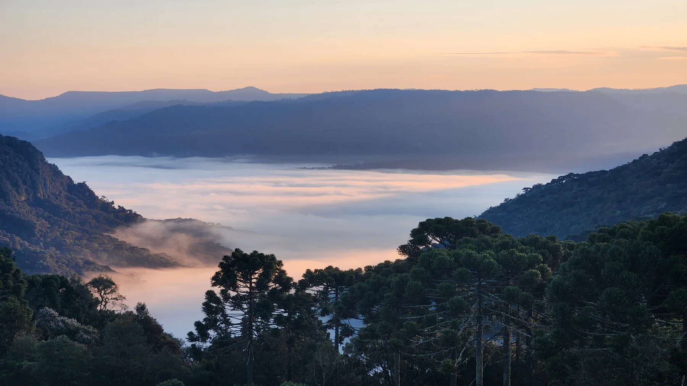
Uma experiência para ganhar perspectiva.
ALTITUDE, a imersão dos cultivadores: quatro dias na Serra Catarinense para olhar para si, para o seu negócio e para as decisões do próximo ciclo. Um encontro para empreendedores e líderes, conduzido por Rodrigo Lamin.
- 30 de outubro a 2 de novembro
- Sítio Mar de Nuvens · Urubici, SC
- Acima de 1.300 metros
Há decisões que pedem distância.
Nem sempre o que falta é mais informação. Às vezes, é espaço para reconhecer o que você está construindo, o que sustenta essa construção e o que deseja levar adiante.
O ALTITUDE cria esse espaço: natureza, conversas e trabalho sobre questões reais. Um tempo fora do ritmo da operação para ampliar a perspectiva e fazer escolhas com mais consciência.
Para quem conduz um negócio, vive uma transição ou quer repensar a forma de crescer sem perder de vista o que importa. Um grupo pequeno, de 10 a 15 empresários.
O negócio que você está cultivando ainda representa a pessoa que você se tornou?
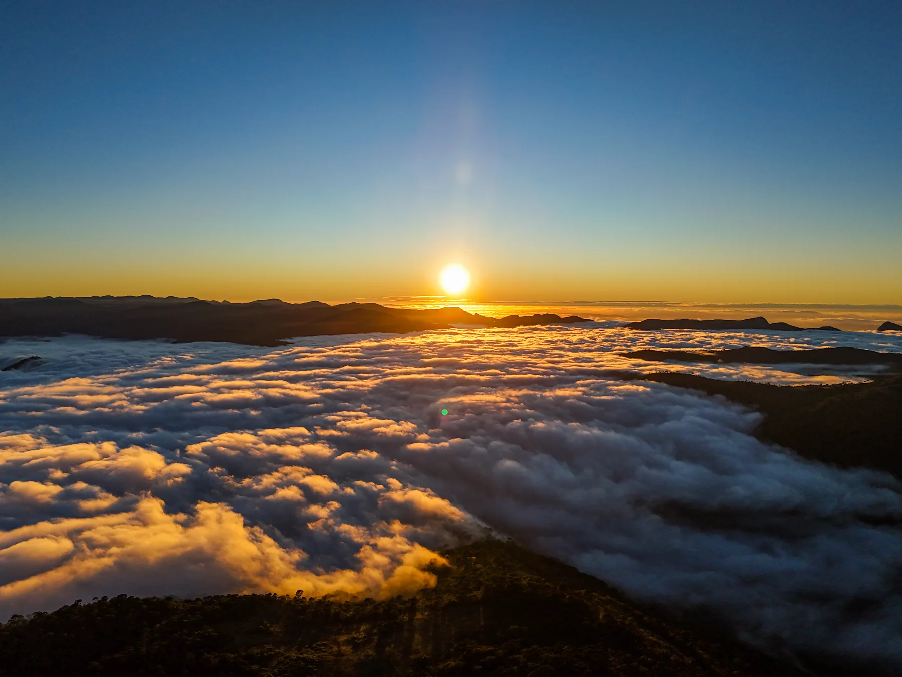
A pessoa e o negócio. O mesmo sistema vivo.
Na natureza, crescimento acontece em relação. A biomimética convida a aprender com os ciclos, os limites e a capacidade de adaptação dos sistemas vivos. No ALTITUDE, a Metodologia da Árvore do Cultivo deixa de ser explicação e vira vivência, em dois dias de trabalho.
O Cultivador. Quem conduz também precisa de cuidado.
História, escolhas, convicções e padrões. Um olhar para as forças que trouxeram você até aqui e para aquilo que precisa mudar no próximo ciclo. Autofeedback, roda de conversa e meditação guiada.
A Árvore. O negócio é feito de relações.
Origem, estrutura, vínculos, tensões e frutos. Uma leitura da empresa que conecta propósito, mercado e construção comercial, e que termina em planos de ação.
Quatro gestos que acompanham a subida.
- EscutarAbrir espaço para perceber a si, o outro e o que o momento pede.
- DecidirReconhecer o essencial e dar direção às próximas escolhas.
- CultivarCuidar das relações e do que precisa ganhar forma no negócio.
- RevisarAprender com o caminho e ajustar o que já não faz sentido.
O lugar faz parte da experiência.
Sítio Mar de Nuvens, em Urubici. Entre araucárias, trilhas e vales, a paisagem convida a diminuir o ritmo. Acolhimento e natureza acompanham os quatro dias da imersão.
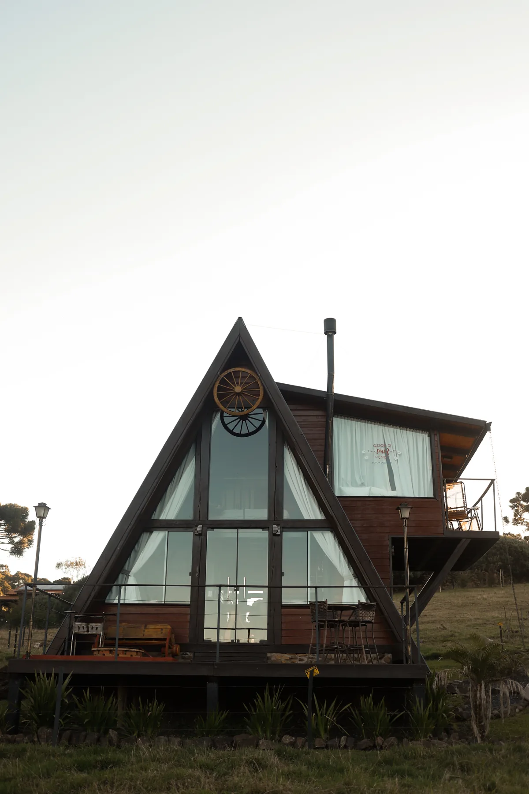
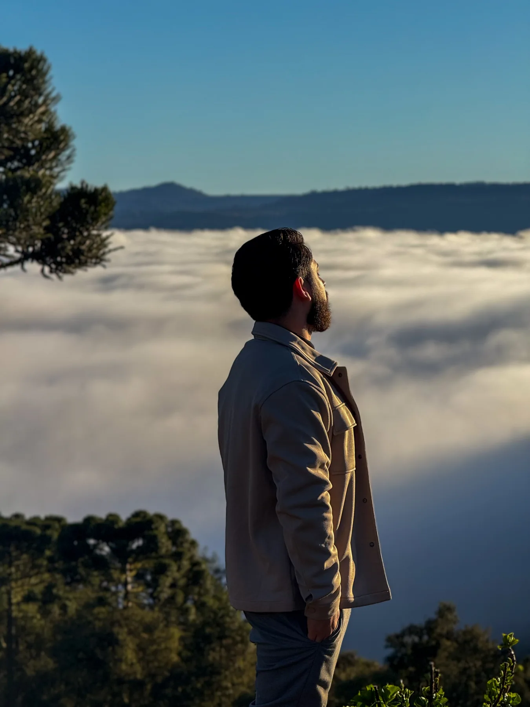
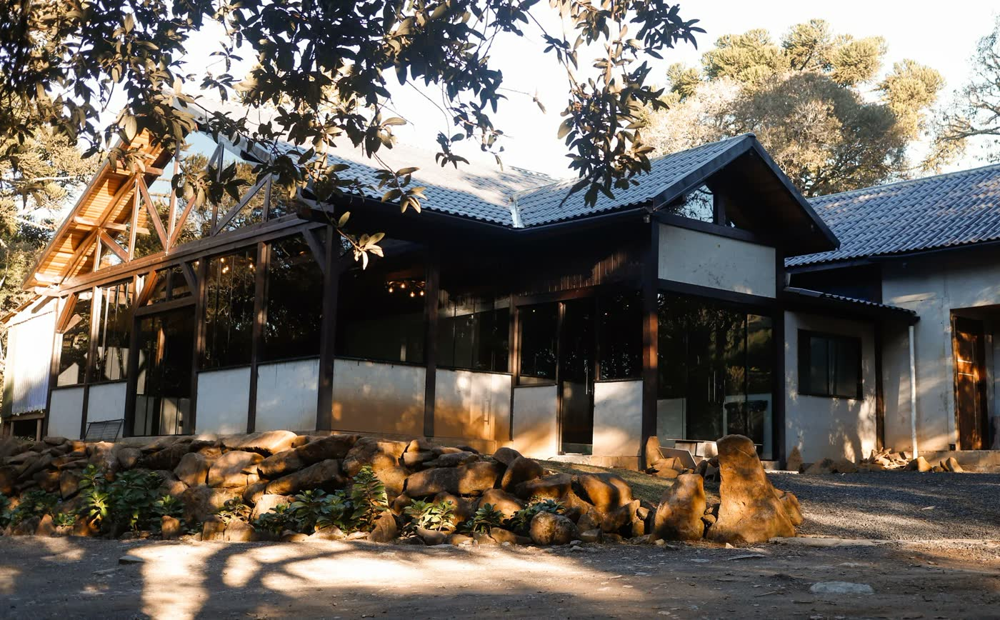
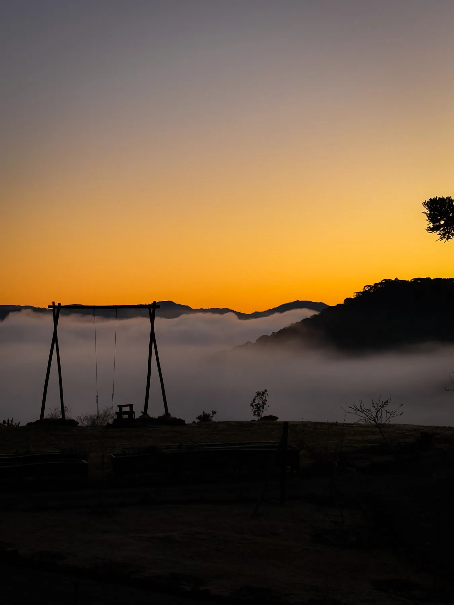
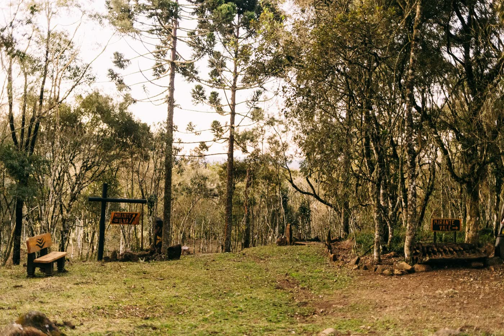
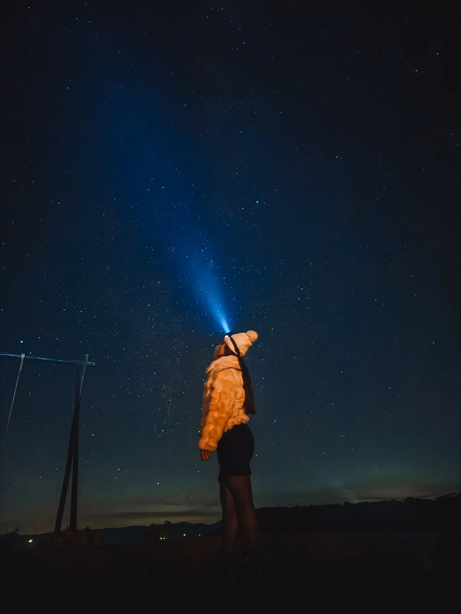
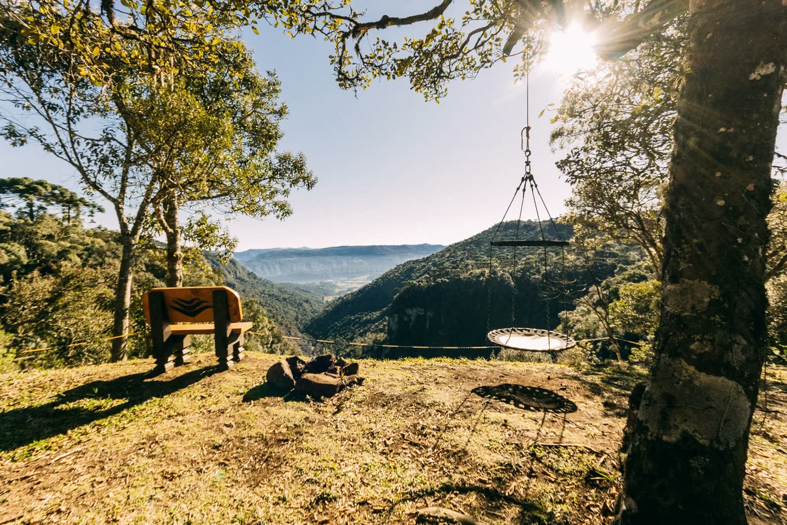
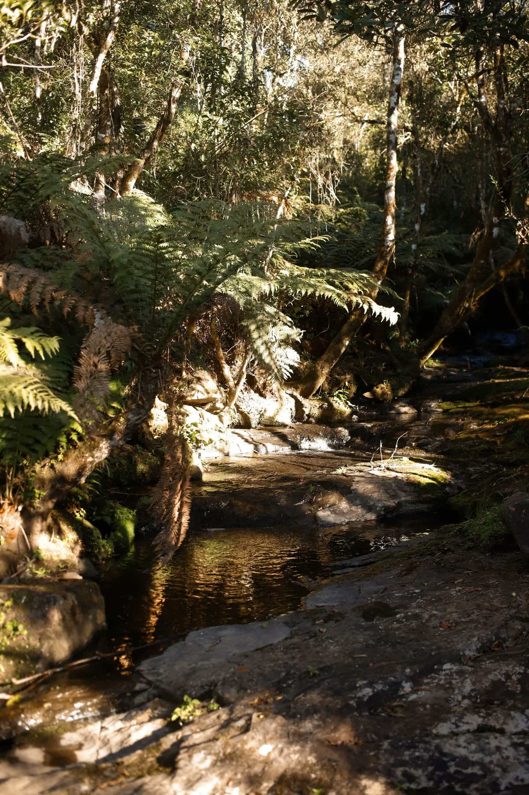
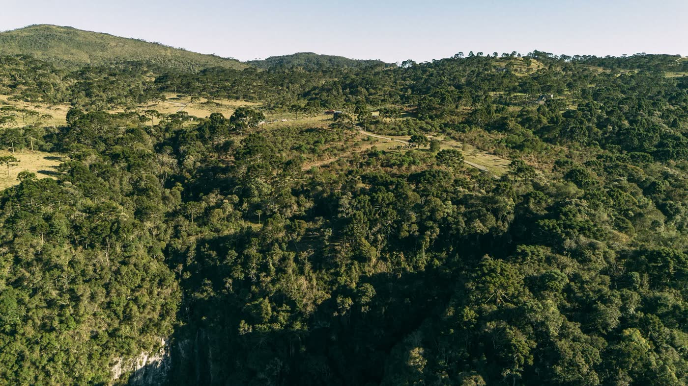
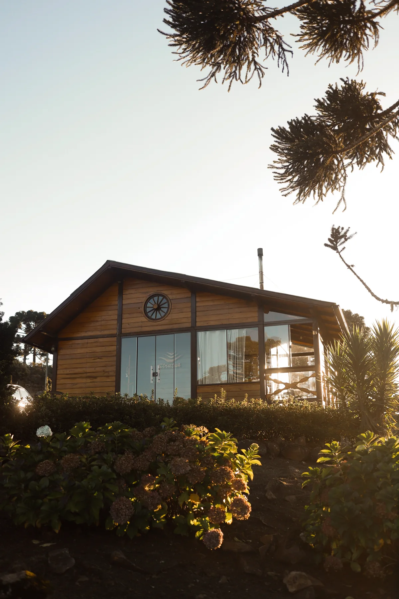
Um lugar para estar.Cabanas, espaços de encontro e paisagens que abrem outras conversas.
Tempo para percorrer.Trilhas, mirantes, água e silêncio para acompanhar o que acontece por dentro.
O que merece continuar crescendo?
As questões do seu negócio encontram espaço para serem trabalhadas com profundidade.
- FortalecerReconhecer o valor que já existe e cuidar do que sustenta o negócio.
- SimplificarRever complexidades que consomem energia sem ajudar a crescer.
- ReconectarAproximar quem você é, o que sua empresa oferece e o que o mercado precisa.
- Dar direçãoOrganizar prioridades e escolhas para o próximo ciclo de construção.
Quatro dias. Um novo ponto de vista.
Dois dias centrais de trabalho, com uma chegada para se ambientar e um encerramento para integrar a experiência. De 30 de outubro a 2 de novembro.
- 30 de outubroChegar
Check-in, acomodação, boas-vindas, jantar e as primeiras conversas.
Acolher o encontro - 31 de outubroO Cultivador
História, escolhas, padrões e o seu modo de liderar. Olhar para quem conduz a construção.
Olhar para si - 1 de novembroA Árvore
Leitura do negócio, relações e decisões. Trabalhar o que precisa de cuidado no próximo ciclo.
Olhar para o negócio - 2 de novembroIntegrar
Check-out e um dia para conhecer Urubici: paisagens, vinícola, almoço, café e boas memórias.
Levar para a vida
Alguns detalhes são melhor vividos do que antecipados. Há espaço para o encontro, para a surpresa e para o ritmo do lugar.
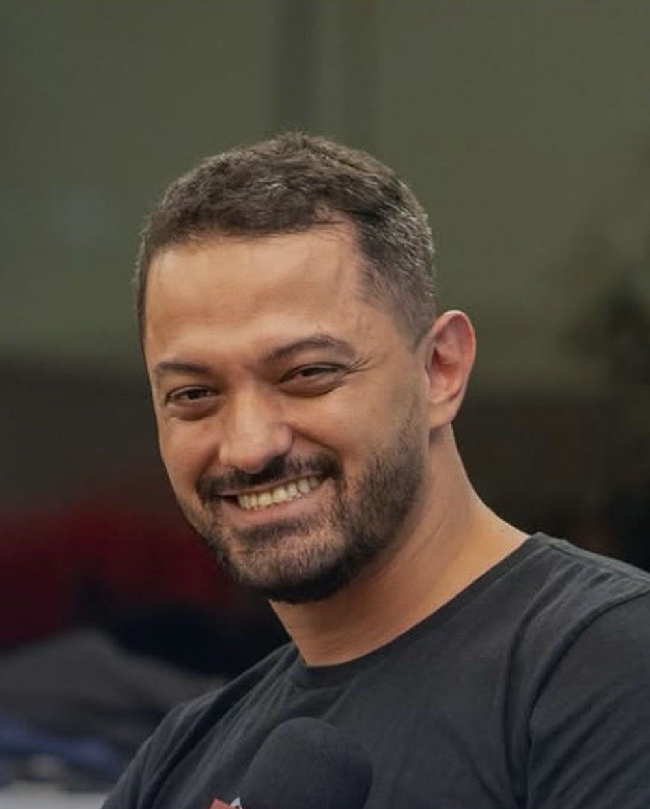
Rodrigo Lamin. Empreender, cultivar relações e aprender com a natureza.
Cofundador e ex-CEO da Involves, vivi a construção de um negócio que cresceu com pessoas, cultura e relações. Hoje, levo esse repertório para o trabalho com outros empreendedores.
A Árvore do Cultivo nasce desse encontro entre experiência empresarial, natureza e comunidade. No ALTITUDE, esse olhar ganha tempo, presença e um lugar para acontecer.
Seu próximo ciclo começa com uma escolha.
Quatro dias para cuidar do cultivador e olhar para a árvore que está crescendo.
- Hospedagem incluída
- Alimentação incluída
- Transfer Florianópolis ↔ Urubici sob demandaValores e disponibilidade consultados à parte.
Condição inaugural
R$ 7.850
Para os primeiros 7 participantes. Consulte a disponibilidade dessa condição.
Demais participantesR$ 10.900
Há possibilidades de parcelamento, a consultar.
Para chegar com clareza.
Para quem é o ALTITUDE?
Para empreendedores e líderes que desejam ganhar perspectiva sobre si, seus projetos e as decisões do próximo ciclo. A experiência conecta a pessoa que conduz e o negócio que ela está construindo.
Como os quatro dias estão organizados?
A chegada acontece em 30 de outubro. Os dias 31 de outubro e 1 de novembro são dedicados ao Cultivador e à Árvore. O dia 2 de novembro reúne o check-out e um encerramento com passeios por Urubici.
O que está incluído no investimento?
Hospedagem e alimentação. Para conhecer a organização das acomodações e os demais detalhes da estadia, converse com a organização pelo WhatsApp.
Como funciona o deslocamento?
Há possibilidade de transfer entre Florianópolis e Urubici sob demanda. Os valores e a disponibilidade são consultados separadamente com a organização.
Posso parcelar o investimento?
Sim, há possibilidades de parcelamento a consultar. Entre em contato para conhecer as condições e a disponibilidade da condição inaugural.
O cultivo também acontece em comunidade.
Conversas que continuam depois da serra, com empreendedores e líderes da rede.
Entrar na comunidadeSua marca pode cultivar este encontro.
Para marcas e organizações que se conectam com empreendedorismo, inovação e impacto.
Conversar sobre uma parceriaGanhar distância. Encontrar direção.
Do alto, o que importa fica mais claro. E o que você colhe lá em cima volta com você, como semente do próximo ciclo.